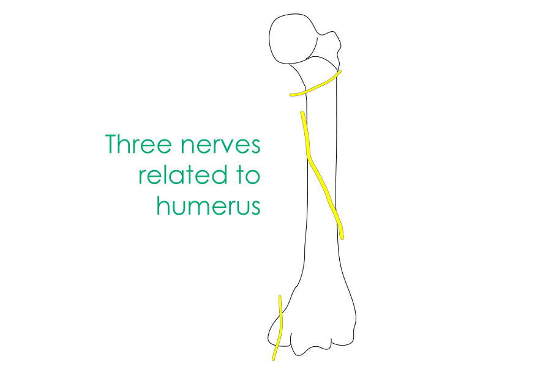

Case Based Learning – Image based Questions for Spotters

1. Which nerve is represented by the upper yellow line, near the surgical neck?
The axillary nerve.
2. A fracture at the middle yellow line causes wrist drop. Identify the nerve at this level.
The radial nerve in the radial groove.
3. Which nerve is represented by the lowest yellow line, behind the medial epicondyle?
The ulnar nerve.